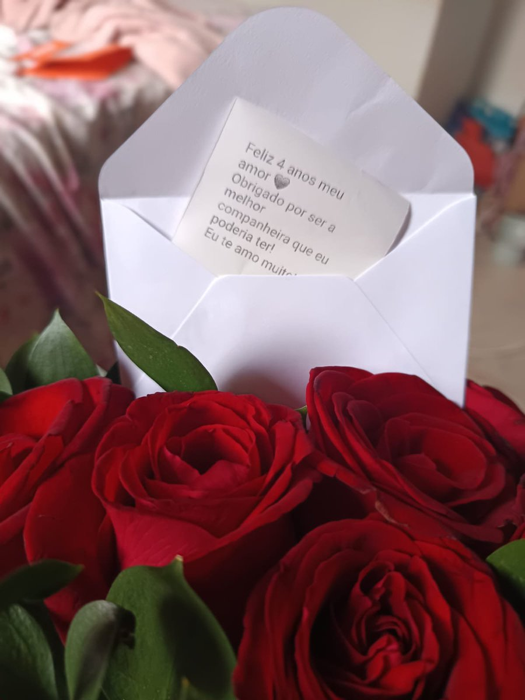

我说怎么推给我原来是ff。真好🥹


Eu não costumo postar muito sobre minha vida a dois no Twitter, mas acho que isso merece uma atenção especial.
Há 4 anos, conheci o amor da minha vida pela internet (sim, isso é totalmente possível). Ele morava do outro lado do país — eram mais de 1700 km de distância. + https://t.co/MoBZ3kcjEz
Há 4 anos, conheci o amor da minha vida pela internet (sim, isso é totalmente possível). Ele morava do outro lado do país — eram mais de 1700 km de distância. + https://t.co/MoBZ3kcjEz